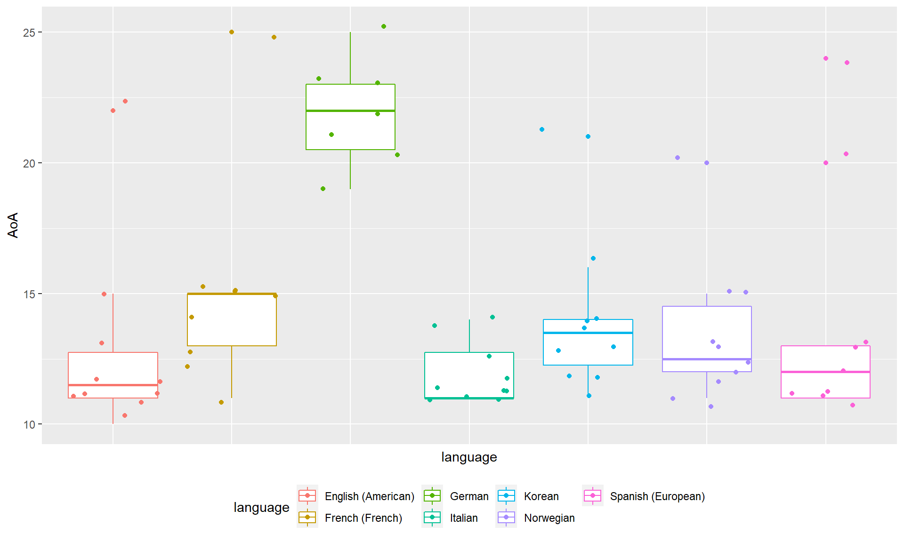
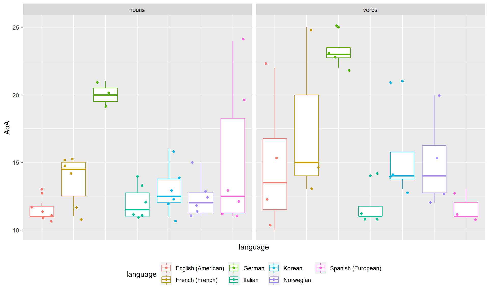
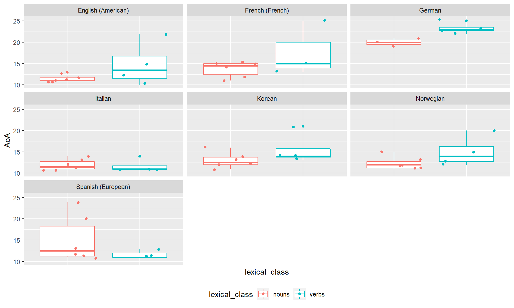
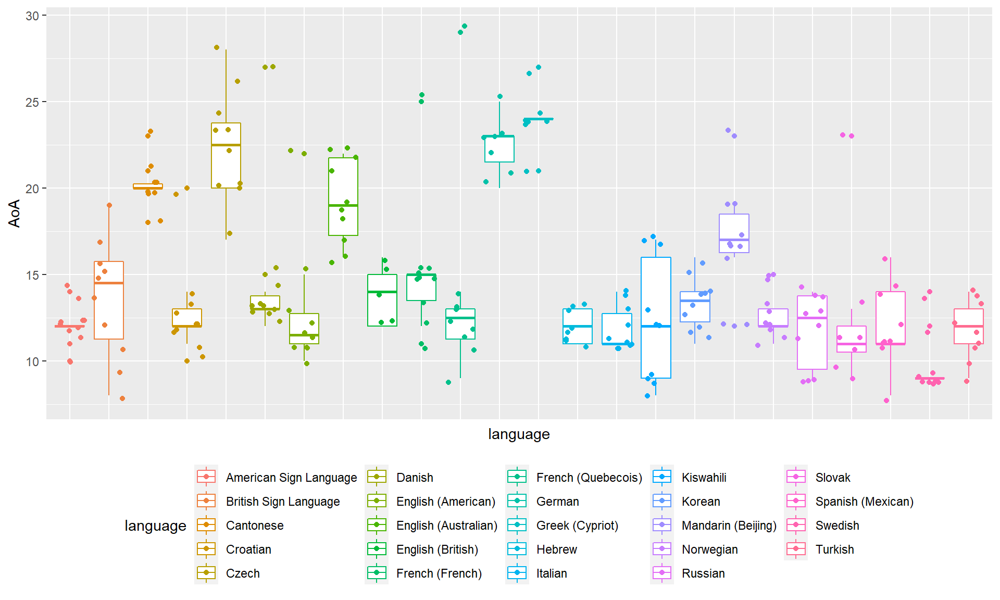
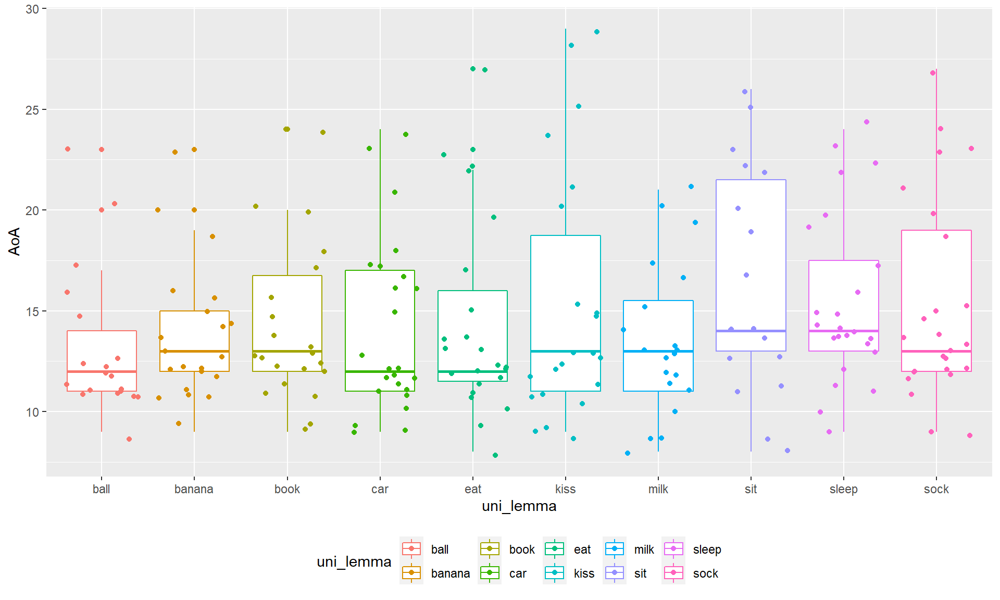
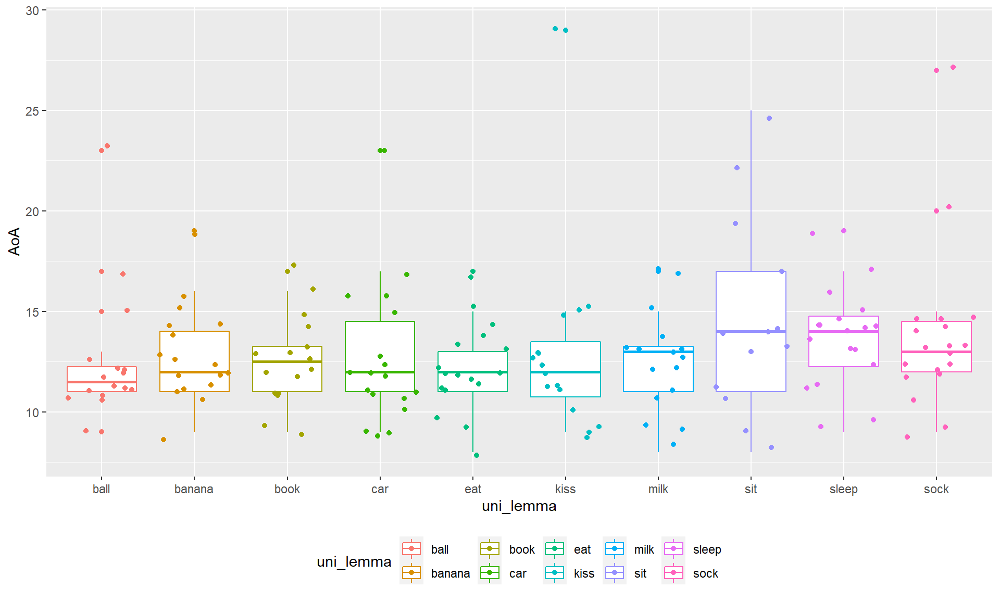
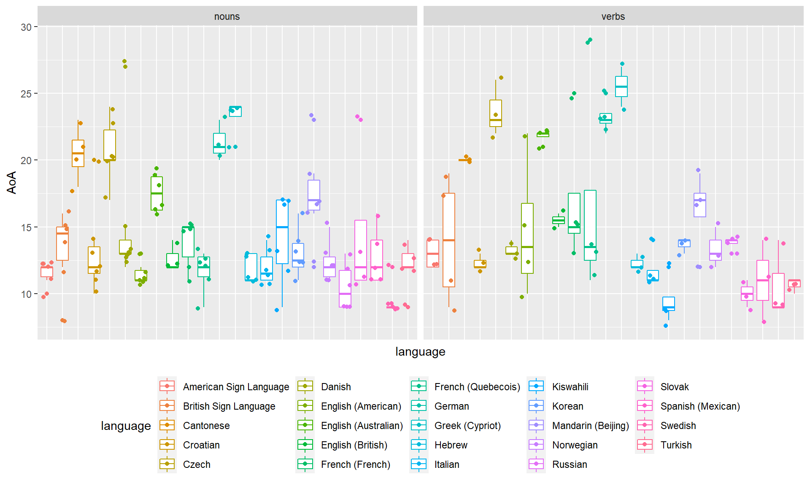
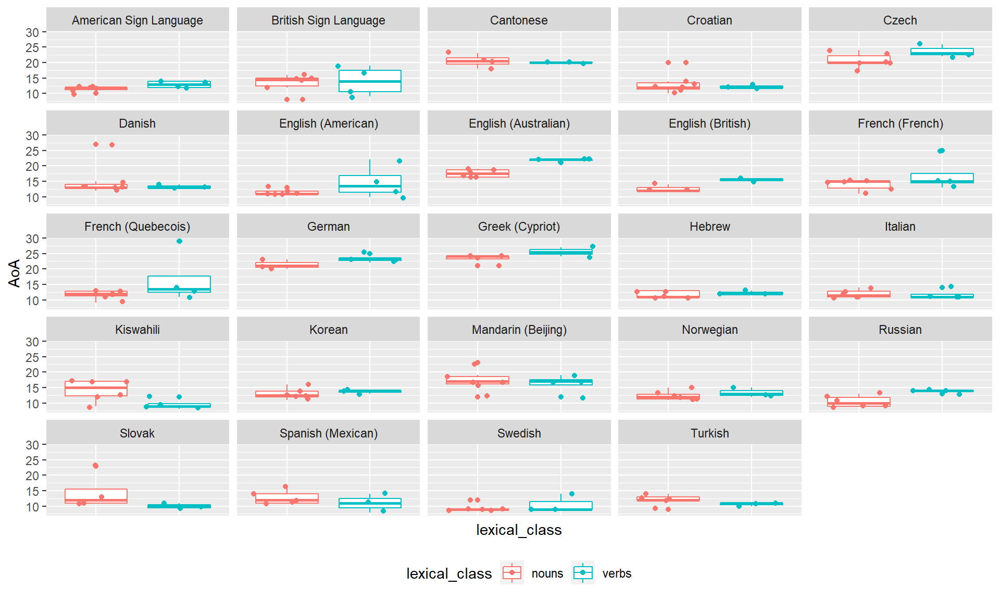

The purpose of this document is to understand whether Age of Acquisition varies between the target words we have chosen or could choose in the LWL project. It is based on Wordbank values and Age of Acquisition is calculated as the age at which 50% of children were reported to understand the word.
As a reminder, these are the words we would like to use when testing our younger target age, up until 18 months.
Based on the words chosen for now from Stimuli Sets, how much does Age of Acquisition vary?
It looks like the AoA for most of our chosen words is between 12 and 15 months, but that some words aren’t acquired until 20 months or later.
Note: values for German are based on production, not understanding

Is there a big difference in AoA of understanding between nouns and verbs? This is one of our research questions and if we just happened to pick nouns that are acquired early and verbs that are acquired later (or vice versa), then this would present a confound.
The plots show that in general verbs have a later AoA, although a model comparing nouns and verbs does not bear out this difference.


Note: German has been removed from this analysis.
| AoA | |||
|---|---|---|---|
| Predictors | Estimates | CI | p |
| (Intercept) | 13.04 | 11.92 – 14.16 | <0.001 |
| lexical class [verbs] | 1.32 | -0.47 – 3.11 | 0.144 |
| Random Effects | |||
| σ2 | 0.25 | ||
| τ00 definition | 10.36 | ||
| τ00 language | 0.00 | ||
| N definition | 56 | ||
| N language | 6 | ||
| Observations | 58 | ||
| Marginal R2 / Conditional R2 | 0.624 / NA | ||
If we take our 10 English words and match them across languages, what is the AoA variation? These would not end up being the words we would choose in each language, due to the constraints we’ve set (i.e. grammatical gender, onset of target-distractor pairs, etc.), but it let’s us look quickly at more languages.
As before, it looks like the AoA for most of our chosen words is between 12 and 15 months, with some words acquired much later, although here we see more variation in general.
Note: Understanding values for American Sign Language, Cantonese, Czech, English (Australian), German, and Greek (Cypriot) are duplicates of production values (there are no understanding scores for these languages).

Since we’ve now matched for word across languages, we can actually see the AoA breakdown for each word. As in the previous plot, we see that for these words, the AoA is typically between 12 and 15 months, but that this has a high maximum value.

This plot is the same as above, but remove languages where we only have production data (American Sign Language, Cantonese, Czech, English (Australian), German, and Greek (Cypriot)). A lot of the variability is removed, but there are still some languages where the AoA is after 20 months.

Is there a big difference in AoA of understanding between nouns and verbs? This is one of our research questions and if we just happened to pick nouns that are acquired early and verbs that are acquired later (or vice versa), then this would present a confound.
The plots show that sometimes verbs have a later AoA and a model comparing nouns and verbs does not bear out a difference.
Note: American Sign Language, Cantonese, Czech, English (Australian), German, and Greek (Cypriot) have been removed from this analysis (as they don’t have unique scores for understanding).


| AoA | |||
|---|---|---|---|
| Predictors | Estimates | CI | p |
| (Intercept) | 12.92 | 12.03 – 13.81 | <0.001 |
| lexical class [verbs] | 0.22 | -0.87 – 1.32 | 0.686 |
| Random Effects | |||
| σ2 | 4.42 | ||
| τ00 definition | 5.44 | ||
| τ00 language | 1.45 | ||
| ICC | 0.61 | ||
| N definition | 128 | ||
| N language | 18 | ||
| Observations | 163 | ||
| Marginal R2 / Conditional R2 | 0.001 / 0.610 | ||